以下針對 2D 部份做說明，分別為 [變更]、[新增] 及 [Express Tools 整合] 三個部份:
一、變更部份：
˙物件循環選取
經由物件循環選取的步驟
1.在「選取物件」提示下，按住 Shift+Spacebar。 在離所需物件儘可能近的地方按一下。
2.繼續按滑鼠直到所需物件亮顯。
3.按 Enter 以選取物件。
˙暫時取代鍵
按住 [Shif]鍵 並按一下滑鼠滾輪.....暫時進入 自由環轉「3DFORBIT」模式。
˙外部參考管理員
由原先的對話方塊改為 選項板型式，可以錨碇於左側或右側。
並整合影像參考管理員及新增 DWF 參考底圖功能，集結3種功能的外部參考選項板。
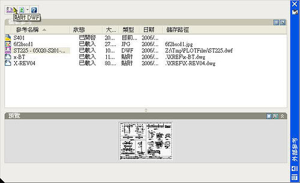
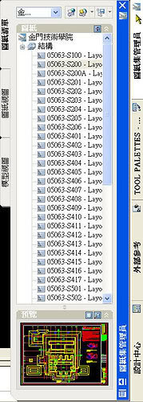
二、新增部份：
˙正交模式的工具提示
移動游標時，工具提示將指示最近的正交增量。
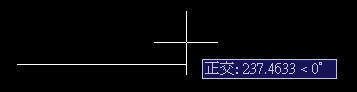
˙出圖 Adobe PDF 檔
可以從圖面中直接建立 Adobe 可攜式文件格式 (PDF) 檔。
˙清爽螢幕
若要展開繪圖顯示區域，請按一下「檢視」功能表 ?「清爽螢幕」，清爽螢幕按鈕位於應用程式視窗的右下角。
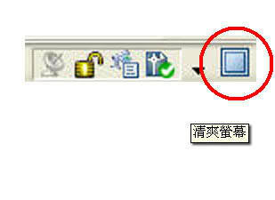
˙可信任的 DWG
開啟檔案時會有 該檔案是可信任的 DWG，上一次由 Autodesk 應用程式或 Autodesk 授權的應用程式儲存。
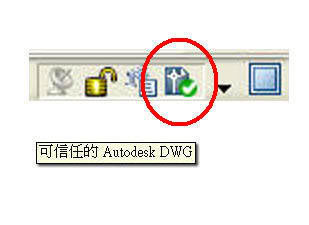
Autodesk - DWG
http://usa.autodesk.com/adsk/servlet/index?id=6703438&siteID=123112&DCMP=ILC-DWG-PUV
˙按兩下動作
2006 以下版本滑鼠左鍵的 按兩下編輯 是內定的，無法做任何新增與更改。當游標置於圖面中的某物件上，且指向設備可以進行按兩下動作時，按兩下動作可讓您存取編輯指令。物件為 DIMENSION 執行 性質 PROPERTIES 指令。當物件為 TEXT 執行 DDEDIT 指令。
2007 版本在「自訂使用者介面」編輯器中,開放了「按兩下動作」的自訂編輯.也就是 當物件為 DIMENSION 執行 性質 PROPERTIES 指令。可把它改為 當物件為 DIMENSION 執行 標註編輯 dimedit 指令。
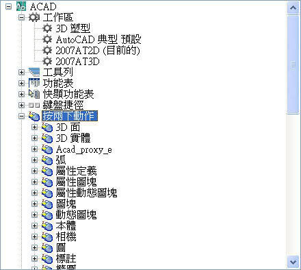
˙文字區塊移動
現地編輯文字時，可將需移動的文字字串選取後，按住滑鼠左鍵直接拖曳。
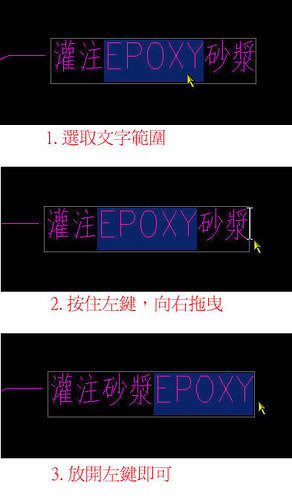
˙WINDOWS圖示改變
DWG 檔案在 WINDOWS 圖示顯示改為 2007格式。
˙CUI自訂檔 新增工具選項板指令
可由「自訂指令」選項顯示「自訂使用者介面」對話方塊時，直接拖曳指令到工具選項板使用。
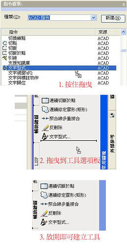
三、Express Tools 整合部份：
˙常用的 Express Tools 已整合至此產品。並新增 工具列 及以下 指令：
CHSPACE 指令：變更空間
COPYTOLAYER 指令：將物件複製到新圖層
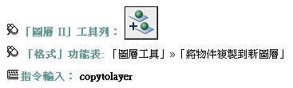
LAYCUR 指令：變更為目前圖層
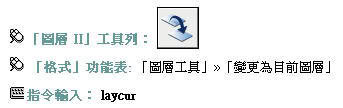
LAYDEL 指令：圖層刪除
LAYFRZ 指令：圖層凍結
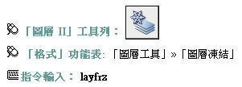
LAYISO 指令：圖層隔離
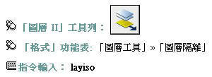
LAYLCK 指令：圖層鎖護
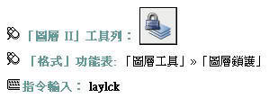
LAYMCH 指令：圖層相符
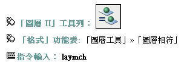
LAYMCUR 指令：使物件的圖層成為目前圖層
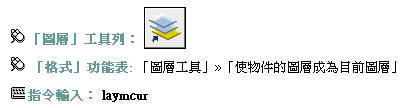
LAYMRG 指令：圖層合併
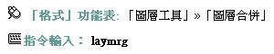
LAYOFF 指令：圖層關閉
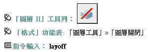
LAYON 指令：打開全部圖層
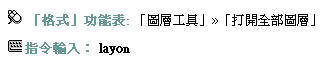
LAYTHW 指令：解凍全部圖層
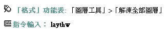
LAYULK 指令：圖層解鎖
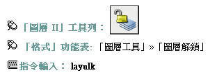
LAYUNISO 指令：圖層取消隔離
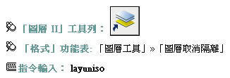
LAYVPI 指令：將圖層隔離至目前視埠
LAYWALK 指令：圖層漫遊
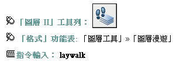